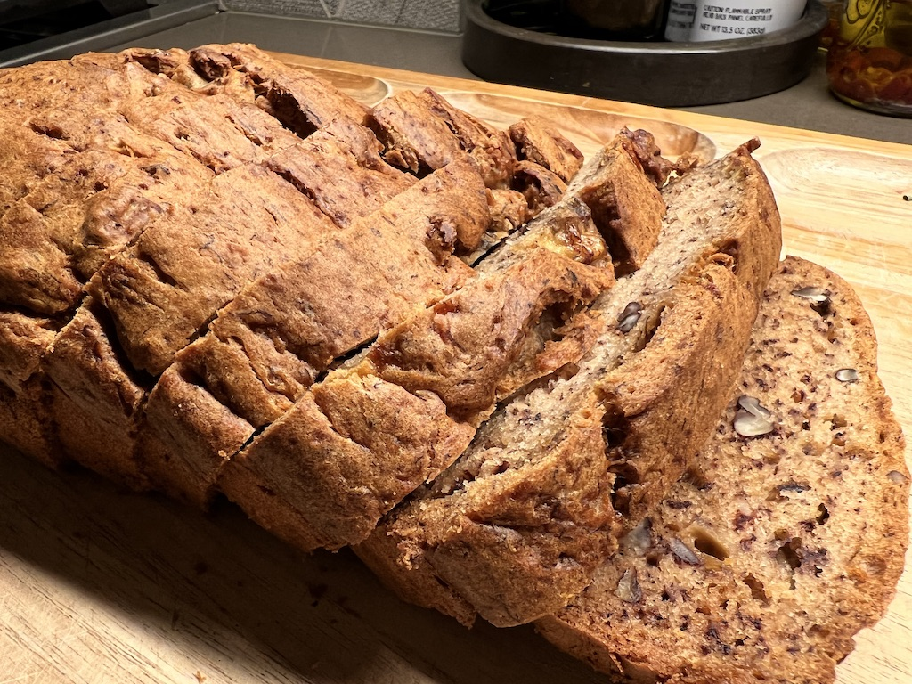

Banana bread recipe
Ingredients
- ⅓ cup melted butter
- 3 Bananas
- 1 egg
- ¾ cup Monkfruit sweetener
- 1 tsp vanilla extract
- 1 tsp baking soda
- ½ tsp ground cinnamon
- ¼ cup pecans
- 1 tbsp chocolate chips
- 1½ cups flour
Instructions
- Combine the Monkfruit sweetener and melted butter. Stir.
- Preaheat the oven to 350 degrees Fahrenheit.
- Prepare a loaf pan with butter.
- Add the bananas to the mixture and mash until smooth.
- Add the egg and vanilla extract. Stir.
- Mix in the baking soda, cinnamon, pecans, half of the chocolate chips and flour.
- Pour the batter into the prepared loaf pan.
- B ake for about 55 minutes then take the bread out. Then let it cool. Coat with chocolate chips